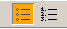
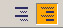
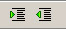
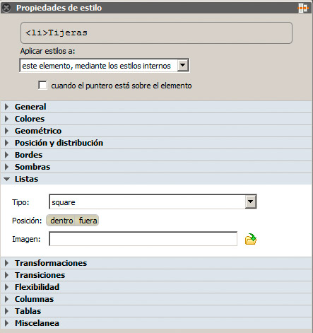
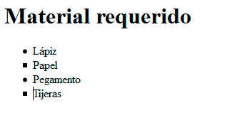
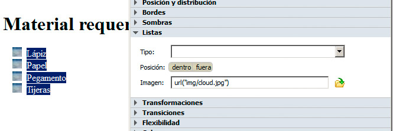

Podemos generar la lista desde cero, haciendo clic en el botón y comenzando a escribir los términos o bien escribir cada término como si fuese un párrafo, para posteriormente seleccionar todo el texto y hacer clic en el botón para generar la lista.
Aunque no todos los editores cuentan con esta otra opción, en BlueGriffon encontramos los botones de la figura destinados a crear listas de definición.

Modificación de la sangría
Los dos iconos de la figura se emplean para incrementar o disminuir la sangría de una parte de la lista, permitiéndonos generar sublistas dentro de una lista. Lo que hace en realidad es insertar una lista dentro de otra.

Estos dos botones también son útiles para incrementar la sangría de un párrafo concreto respecto al texto, remarcando así que ese texto se diferencia del resto. No obstante, este tipo de operaciones también se pueden realizar mediante los estilos.
Modificación de la apariencia de una lista
Las listas pueden ser transformadas para que se ajusten a la apariencia que queramos dar a nuestra página. En la versión actual de HTML todo el formato se realiza mediante estilos: desde cambiar la distancia respecto al margen, hasta modificar la forma de numerar las listas.
Por tanto, para modificar los estilos recurriremos nuevamente al panel Propiedades de estilo.
Sin entrar en los aspectos estéticos que ya hemos visto o los que analizaremos más adelante, contamos con una categoría denominada Listas, con algunas opciones específicas de las listas:

- Tipo: es la opción de estilos denominada list-style-type y, dependiendo del valor asignado, se modificará la apariencia de la viñeta de la lista o el tipo de numeración, si es una lista ordenada. Podemos aplicarlo a la lista completa o a algunos elementos concretos, como hemos hecho en la lista de la figura siguiente.

- Posición: la opción list-style-position tiene dos valores, inside y outside, que harán que los elementos de la lista salgan hacia dentro o hacia fuera.
- Imagen: el valor list-style-image se emplea para definir una imagen como viñeta. La figura contiene un ejemplo:
